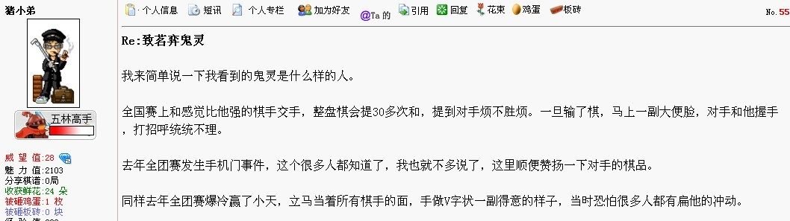

根源贴:ShowPost.asp?ThreadID=19678
虎哥在86楼指出的:
那么我们再回顾71楼的西北狼的梦婷所说的:

那么鬼灵在西北狼发生了什么事?
参考了一下55楼:

经过了俺多方的打听,是向曹冬多次提和.....
俺四处八卦打听了一下,细节就不赘述了
鬼灵离开西北狼的直接原因:
西北狼接触过陕西籍人士鬼灵,认可了其实力,打算吸收成为智运会运动员,但其性格不得人心没人缘,鬼灵拒绝穿陕西统一队服,因此陕西省领导决定不让他参加,自此鬼灵退出了西北狼...后来又怎样入了茗弈就不得而知了......
本帖八卦事实,不掺杂个人情绪,如有弄错,请立即指出
［此帖子已被 掌棋如烟 在 2013-6-29 12:18:40 编辑过］